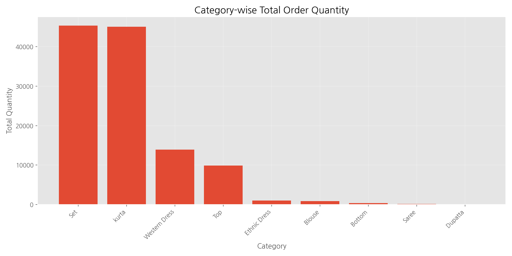
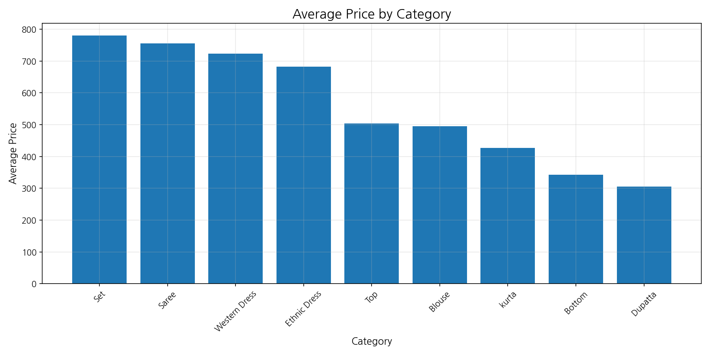

본 보고서는 아마존 판매 데이터를 분석하여 마케팅 인사이트 도출을 목적으로 수행되었습니다. 판매 데이터를 기반으로 카테고리별 판매량과 매출, 가격 탄력성, 지역별 판매 특성 등을 분석하여 효과적인 마케팅 전략 수립을 위한 기초 자료를 제공합니다.

카테고리별 매출 (백만 단위)
위 그래프에서 볼 수 있듯이, Set 카테고리가 약 $39.2M로 가장 높은 매출을 기록했으며, 그 뒤를 kurta($21.3M), Western Dress($11.2M) 순으로 이어가고 있습니다. 특히 상위 2개 카테고리(Set, kurta)가 전체 매출의 약 60%를 차지하고 있어, 이들 카테고리에 마케팅 자원을 집중할 필요가 있습니다.

카테고리별 판매량
판매량 측면에서는 Set(45,225개)과 kurta(44,970개)가 거의 비슷한 수준을 보이고 있지만, 매출액에서는 상당한 차이가 있습니다. 이는 두 카테고리의 평균 판매 가격 차이에서 비롯된 것으로 분석됩니다.

카테고리별 평균 판매 가격
카테고리별 평균 판매 가격을 살펴보면, Set($866.87)이 가장 높고, Saree($815.35), Western Dress($804.65) 순으로 높은 가격을 보이고 있습니다. 반면 kurta 카테고리는 판매량이 높음에도 상대적으로 낮은 평균 가격($473.64)을 보이고 있어, 가격 인상을 통한 수익성 개선의 여지가 있습니다.

카테고리별 판매량 vs 매출 (마케팅 효율성)
판매량과 매출의 관계를 분석한 그래프를 보면, Set 카테고리가 가장 효율적인 마케팅 성과를 보이고 있으며, kurta는 판매량 대비 매출이 상대적으로 낮은 편입니다. Western Dress는 중간 정도의 효율성을 보이고 있습니다.

카테고리별 평균 가격 vs 판매량 (가격 탄력성)
가격 탄력성 분석 결과, kurta 카테고리는 상대적으로 낮은 가격에도 불구하고 높은 판매량을 기록하고 있어, 가격에 민감한 특성을 보이고 있습니다. 반면 Set 카테고리는 높은 가격에도 불구하고 높은 판매량을 유지하고 있어, 프리미엄 전략이 효과적일 수 있습니다.

상위 카테고리의 월별 매출 추이
월별 매출 추이를 살펴보면, Set과 kurta 카테고리 모두 일정한 패턴을 보이고 있으며, 특정 달에 매출이 집중되는 경향이 있습니다. 이는 계절적 요인이나 특정 프로모션의 영향일 수 있으며, 이러한 패턴을 활용하여 시즌별 마케팅 전략을 구상할 수 있습니다.
아마존 판매 데이터 분석을 통해 다음과 같은 마케팅 인사이트 및 제안을 도출할 수 있습니다:
- 카테고리 집중 전략: Set과 kurta 카테고리에 마케팅 자원을 집중 투입하되, 각 카테고리의 특성을 고려한 차별화된 접근이 필요합니다.
- 가격 전략: Set 카테고리는 프리미엄 이미지를 강화하고, kurta 카테고리는 가격 인상을 통한 수익성 개선을 고려해볼 수 있습니다.
- 지역별 맞춤 전략: BENGALURU, HYDERABAD 등 주요 판매 도시를 중심으로 지역 맞춤형 프로모션을 강화해야 합니다.
- 시즌별 마케팅: 월별 매출 추이를 분석하여 성수기에 맞춘 집중적인 마케팅 캠페인을 전개할 필요가 있습니다.
- 신규 카테고리 개발: Western Dress와 Top 같은 중간 규모의 카테고리를 성장시키기 위한 전략적 투자를 검토해볼 수 있습니다.
이러한 인사이트를 바탕으로 실행 가능한 마케팅 전략을 수립하고, 지속적인 데이터 모니터링을 통해 전략의 효과를 검증하고 개선해 나가는 것이 중요합니다.